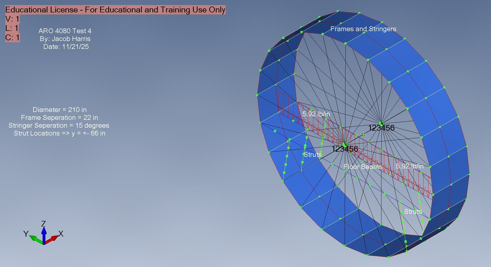
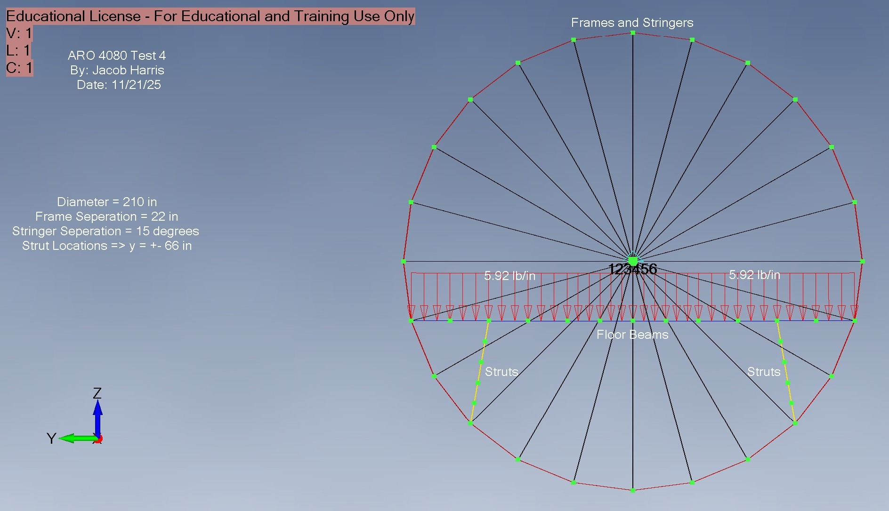
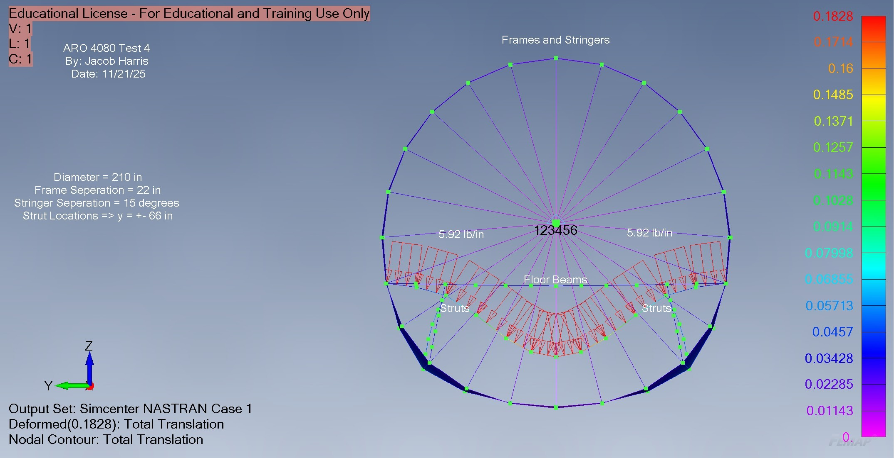

AEROSPACE ENGINEERING / COURSEWORK
Fuselage-Frame Finite-Element Analysis
ARO4080 · structural load paths · November 2025

Overview & objectives
I built and analyzed a fuselage-frame finite-element model for ARO4080 at California State Polytechnic University, Pomona. My November 2025 report studies how an aircraft floor load travels through the floor beams, struts, ring frame, stringers, and skin.
My model & idealization
I modeled a 210 in diameter fuselage with 22 in frame spacing, floor struts at y = ±66 in, and stringers spaced every 15°. I used CBAR elements for the frames, floor beams, and segmented struts; CROD elements for the stringers; and CQUAD4 elements for the skin. I assigned aluminum properties and placed a dummy frame on each side of the main frame.
My loading & constraints
I applied a uniformly distributed downward floor load of 5.92 lb/in, totaling approximately 1,200 lb, to the main frame. I supported the dummy frames with “breathing wagon wheel” constraints so the supported structure could still expand radially.
My analysis & checks
I ran a static analysis in FEMAP/Simcenter NASTRAN and reviewed the deformed shape, nodal displacements, support reactions, grid-point force balance, and axial-force, shear-force, and bending-moment diagrams. I used the reaction sum and near-zero nodal force-balance residuals to check equilibrium.
My results
I found a maximum displacement of 0.1828 in at the center of the floor beam. The reported vertical support reaction was approximately 1,200.84 lb, consistent with the applied distributed load. I traced the load from the bending floor beams into the struts in compression, then into the ring frame and skin around the circumference.
These are results from my static finite-element model; they are not physical test measurements. The displacement plots use an exaggerated deformation scale.
What I learned
I learned how sensitive a structural model is to missing connections and incorrect constraints. Building the mesh, defining properties, applying loads and supports, and checking equilibrium helped me explain the load path rather than relying on displacement plots alone.

